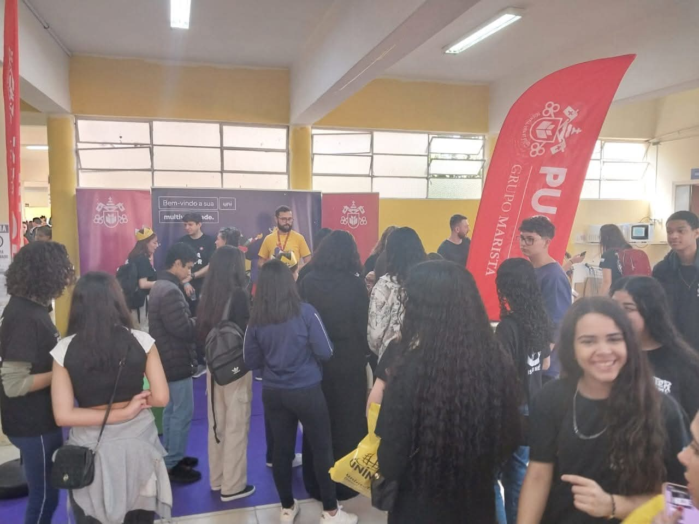
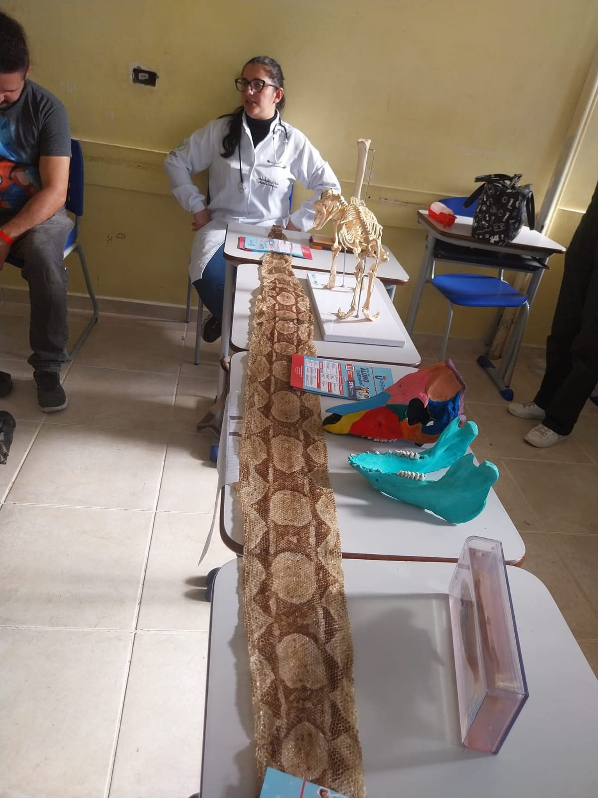
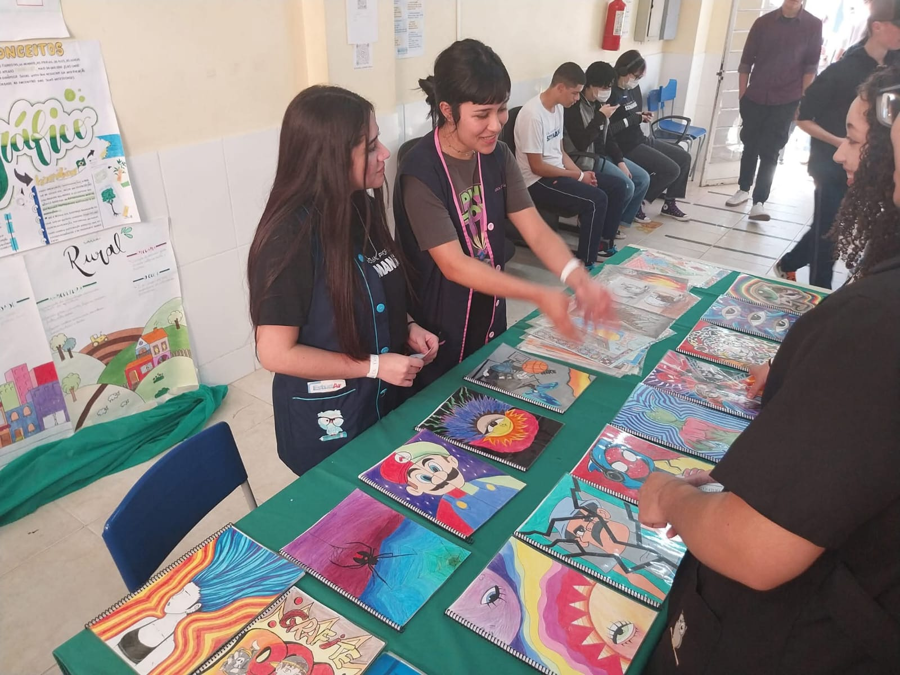

Com um grande evento na sexta-feira (29), o Colégio Estadual Professor Júlio Szymanski realizou a sua 4ª Feira de Profissões, que é também a última edição da Feira de Profissões Itinerante de Araucária.
A Feira de Profissões é uma oportunidade para os alunos apresentarem seus trabalhos
e representa uma ponte entre o presente e o futuro profissional.


